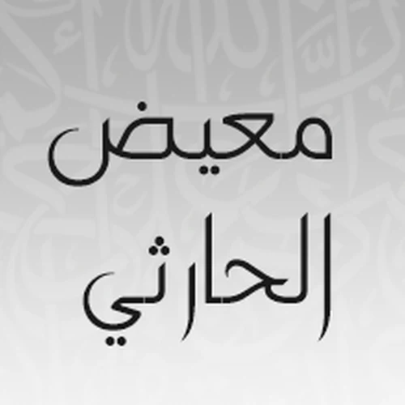

سور القرآن الكريم بصوت الشيخ معيض الحارثي
اختر السورة للاستماع إليها أو تحميلها بصيغة MP3.
فهرس السور بصوت الشيخ معيض الحارثي
| رقم السورة | اسم السورة | صفحة البداية | نوع السورة |
|---|---|---|---|
| 1 | الفاتحة | 1 | مكية |
| 2 | البقرة | 2 | مدنية |
| 3 | آل عمران | 50 | مدنية |
| 4 | النساء | 77 | مدنية |
| 5 | المائدة | 106 | مدنية |
| 6 | الأنعام | 128 | مكية |
| 7 | الأعراف | 151 | مكية |
| 8 | الأنفال | 177 | مدنية |
| 9 | التوبة | 187 | مدنية |
| 10 | يونس | 208 | مكية |
| 11 | هود | 221 | مكية |
| 12 | يوسف | 235 | مكية |
| 13 | الرعد | 249 | مدنية |
| 14 | إبراهيم | 255 | مكية |
| 15 | الحجر | 262 | مكية |
| 16 | النحل | 267 | مكية |
| 17 | الإسراء | 282 | مكية |
| 18 | الكهف | 293 | مكية |
| 19 | مريم | 305 | مكية |
| 20 | طه | 312 | مكية |
| 21 | الأنبياء | 322 | مكية |
| 22 | الحج | 332 | مدنية |
| 23 | المؤمنون | 342 | مكية |
| 24 | النور | 350 | مدنية |
| 25 | الفرقان | 359 | مكية |
| 26 | الشعراء | 367 | مكية |
| 27 | النمل | 377 | مكية |
| 28 | القصص | 385 | مكية |
| 29 | العنكبوت | 396 | مكية |
| 30 | الروم | 404 | مكية |
| 31 | لقمان | 411 | مكية |
| 32 | السجدة | 415 | مكية |
| 33 | الأحزاب | 418 | مدنية |
| 34 | سبأ | 428 | مكية |
| 35 | فاطر | 434 | مكية |
| 36 | يس | 440 | مكية |
| 37 | سورة الصافات | 446 | مكية |
| 38 | سورة ص | 453 | مكية |
| 39 | الزمر | 458 | مكية |
| 40 | غافر | 467 | مكية |
| 41 | فصلت | 477 | مكية |
| 42 | الشورى | 483 | مكية |
| 43 | الزخرف | 489 | مكية |
| 44 | الدخان | 496 | مكية |
| 45 | الجاثية | 499 | مكية |
| 46 | الأحقاف | 502 | مكية |
| 47 | محمد | 507 | مدنية |
| 48 | الفتح | 511 | مدنية |
| 49 | الحجرات | 515 | مدنية |
| 50 | سورة ق | 518 | مكية |
| 51 | الذاريات | 520 | مكية |
| 52 | الطور | 523 | مكية |
| 53 | النجم | 526 | مكية |
| 54 | القمر | 528 | مكية |
| 55 | الرحمن | 531 | مدنية |
| 56 | الواقعة | 534 | مكية |
| 57 | الحديد | 537 | مدنية |
| 58 | المجادلة | 542 | مدنية |
| 59 | الحشر | 545 | مدنية |
| 60 | الممتحنة | 549 | مدنية |
| 61 | الصف | 551 | مدنية |
| 62 | الجمعة | 553 | مدنية |
| 63 | المنافقون | 554 | مدنية |
| 64 | التغابن | 556 | مدنية |
| 65 | الطلاق | 558 | مدنية |
| 66 | التحريم | 560 | مدنية |
| 67 | الملك | 562 | مكية |
| 68 | القلم | 564 | مكية |
| 69 | الحاقة | 566 | مكية |
| 70 | المعارج | 568 | مكية |
| 71 | نوح | 570 | مكية |
| 72 | الجن | 572 | مكية |
| 73 | المزمل | 574 | مكية |
| 74 | المدثر | 575 | مكية |
| 75 | القيامة | 577 | مكية |
| 76 | الإنسان | 578 | مدنية |
| 77 | المرسلات | 580 | مكية |
| 78 | النبأ | 582 | مكية |
| 79 | النازعات | 583 | مكية |
| 80 | عبس | 585 | مكية |
| 81 | التكوير | 586 | مكية |
| 82 | الانفطار | 587 | مكية |
| 83 | المطففين | 587 | مكية |
| 84 | الانشقاق | 589 | مكية |
| 85 | البروج | 590 | مكية |
| 86 | الطارق | 591 | مكية |
| 87 | الأعلى | 591 | مكية |
| 88 | الغاشية | 592 | مكية |
| 89 | الفجر | 593 | مكية |
| 90 | البلد | 594 | مكية |
| 91 | الشمس | 595 | مكية |
| 92 | الليل | 595 | مكية |
| 93 | الضحى | 596 | مكية |
| 94 | الشرح | 596 | مكية |
| 95 | التين | 597 | مكية |
| 96 | العلق | 597 | مكية |
| 97 | القدر | 598 | مكية |
| 98 | البينة | 598 | مدنية |
| 99 | الزلزلة | 599 | مدنية |
| 100 | العاديات | 599 | مكية |
| 101 | القارعة | 600 | مكية |
| 102 | التكاثر | 600 | مكية |
| 103 | العصر | 601 | مكية |
| 104 | الهمزة | 601 | مكية |
| 105 | الفيل | 601 | مكية |
| 106 | قريش | 602 | مكية |
| 107 | الماعون | 602 | مكية |
| 108 | الكوثر | 602 | مكية |
| 109 | الكافرون | 603 | مكية |
| 110 | النصر | 603 | مدنية |
| 111 | المسد | 603 | مكية |
| 112 | الإخلاص | 604 | مكية |
| 113 | الفلق | 604 | مكية |
| 114 | الناس | 604 | مكية |